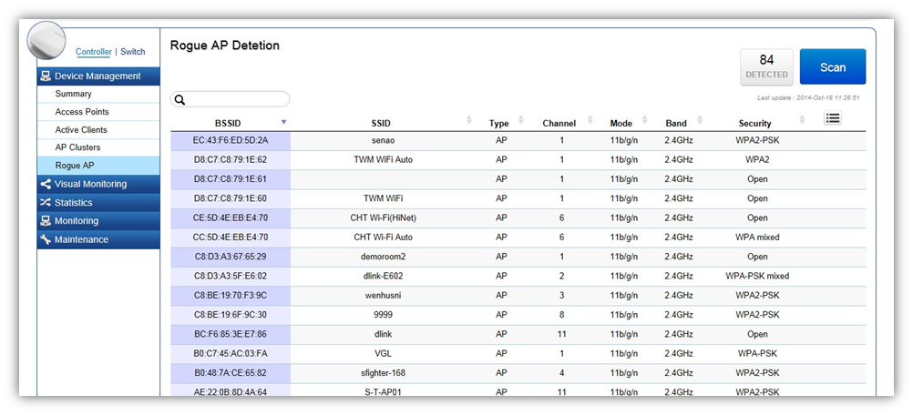
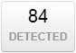

Device Management > Rogue AP Detection
Rogue Access Points are unauthorized and often unmanaged APs attached to an existing wired network which could bring harm the network or may be used to deliberately gain access to confidential company information. The Rogue AP Detection feature can be used to scan 2.4 and 5 GHz frequency bands to identify rogue wireless Access Points not managed by the EWS Switch and displays the rogue AP’s BSSID.

Search Bar
Use the Search Bar to search for Rogue Access Points discovered by the EWS Switch using the following criteria: Client Name, Client IP, Client MAC Address, Client OS, AP Device Name, AP MAC Address, Model Name, SSID, Band, TX Traffic, RX Traffic.

Rogue APs Detected
This shows the number of Rogue APs detected by the Access Points managed by the EWS Switch.

Scan Button
Click on Scan for EWS Access Points managed by the EWS Switch to start scanning for Rogus APs.
Column Filter
Shows or hides fields in the list.
BSSID |
Displays the BSSID of the rogue device detected. |
SSID |
Displays the SSID of the rogue device detected.. |
Type |
Displays the type of the rogue device detected. |
Channel |
Displays the channel of the rogue device detected. |
Mode |
Displays the wireless mode of the rogue device detected. |
Band |
Displays the band of the rogue device detected. |
Security |
Displays the encryption method of the rogue device detected. |
Created with the Personal Edition of HelpNDoc: Easily create iPhone documentation